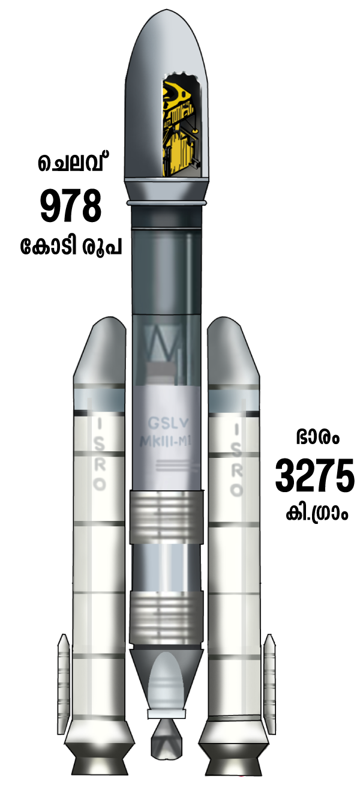
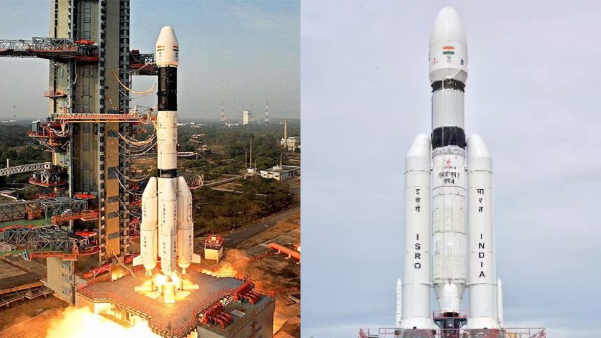
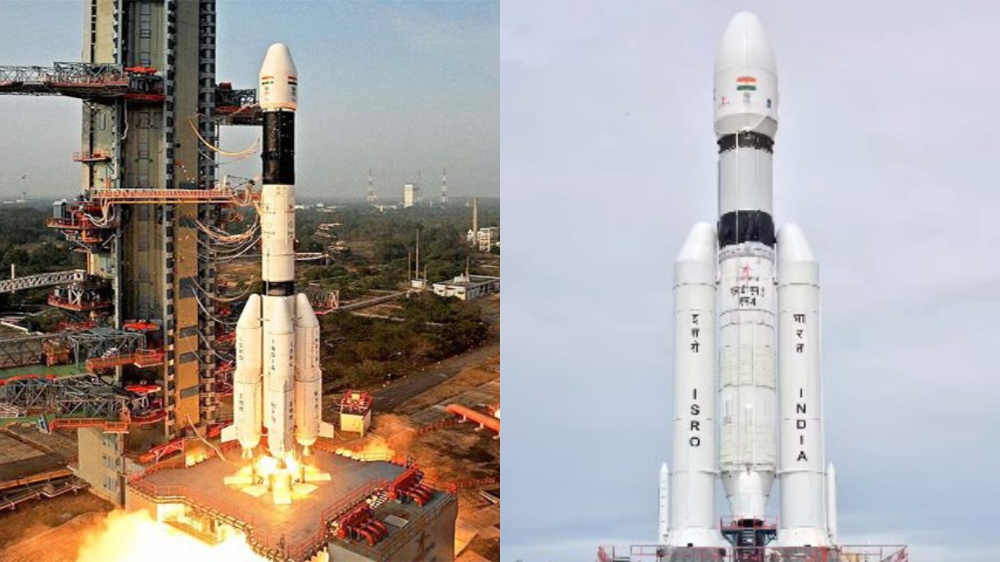

Chandrayaan-2 is the most complicated mission to be organised by the ISRO so far. The spacecraft was built at the U R Rao Satellite Centre in Bengaluru, Karnataka. It will be launched from the Satish Dhawan Space Centre at Sriharikota, Andhra Pradesh. It will carry 13 payloads. It is expected to probe the presence of water at the south pole of the Moon as well as the structure of rocks and minerals on the lunar surface and the quantity of Helium-3 in the atmosphere.

Launcher
The spacecraft would be carried by the 4,000 kilogram Mk III, the most advanced Geosynchronous Satellite Launch Vehicle (GSLV) series rocket also known as the 'Baahubali of ISRO'. The journey to the Moon will be fuelled by S2000 solid rocket boosters in the first stage. L110 liquid-stage and C25 cryogenic upper-stage motors will power it subsequently in the ascent.


 
